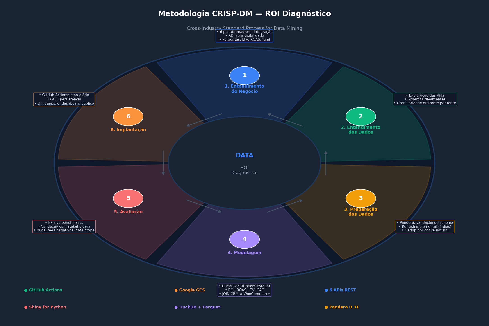
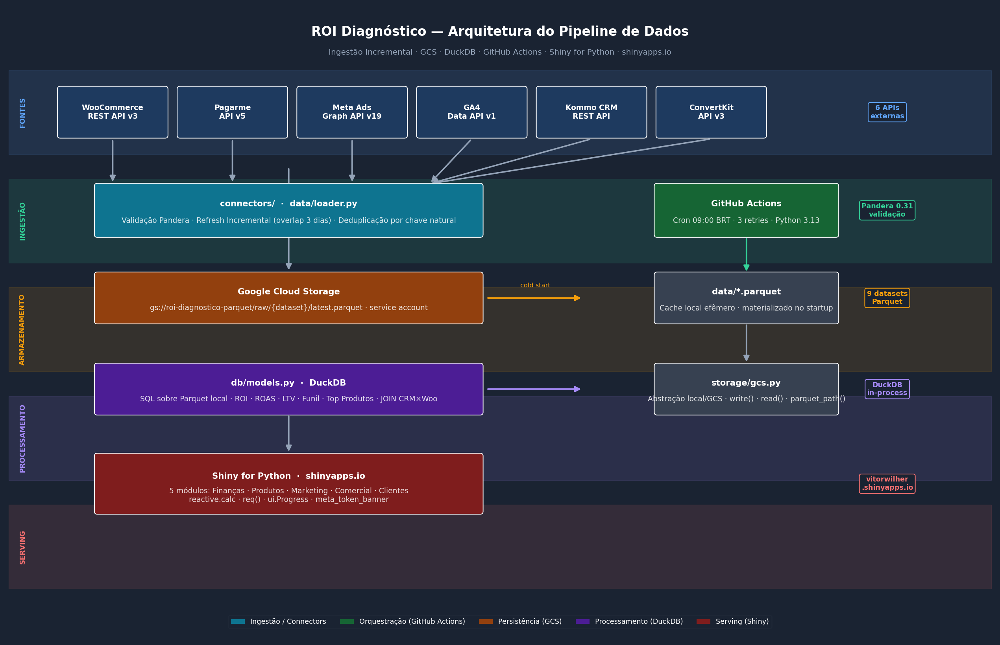

ROI Diagnóstico — Plataforma de Inteligência Comercial
Visão Geral
O ROI Diagnóstico é uma plataforma de inteligência comercial construída para consolidar em um único ambiente interativo os dados de vendas, tráfego pago, analytics, CRM, gateway de pagamento e e-mail marketing de um negócio digital de educação.
O projeto cobre o ciclo completo de engenharia de dados: coleta → validação → armazenamento → processamento → visualização, com infraestrutura 100% em nuvem e pipeline automatizado.
Motivação
Negócios digitais que vendem cursos e infoprodutos operam com dados espalhados em seis ou mais plataformas distintas. Cada uma tem seu próprio painel, suas próprias métricas e sua própria lógica de atribuição. O problema prático: nenhuma se fala.
O resultado é que o gestor precisa abrir seis abas, exportar planilhas manualmente e ainda não tem certeza se está comparando o mesmo período, a mesma definição de “receita” ou o mesmo cliente. O ROI Diagnóstico resolve isso consolidando tudo em uma interface única, atualizada diariamente e acessível de qualquer dispositivo.
Perguntas respondidas pelo dashboard:
- Qual o ROI real das campanhas, descontando taxas de processamento e antecipação?
- Quais cursos geraram mais receita? Qual o ticket médio e LTV por produto?
- Quão eficiente é o funil de vendas — de lead a cliente convertido?
- Quem são os clientes de maior LTV e como contatá-los?
- Qual landing page converte mais sessões em receita?
Metodologia — CRISP-DM
O projeto foi estruturado seguindo o processo CRISP-DM (Cross-Industry Standard Process for Data Mining), adaptado para engenharia de dados e analytics operacional.

| Fase | Aplicação no Projeto |
|---|---|
| 1. Entendimento do Negócio | Mapeamento das 6 plataformas, definição das métricas-chave (ROI, ROAS, LTV, CAC, taxa de conversão) e das perguntas que o dashboard precisa responder |
| 2. Entendimento dos Dados | Exploração das APIs, identificação de schemas divergentes, granularidades diferentes (pedido vs. sessão vs. lead) e lacunas históricas |
| 3. Preparação dos Dados | Pipeline com validação Pandera, refresh incremental com sobreposição de 3 dias, deduplicação por chave natural, normalização de tipos de data |
| 4. Modelagem | Queries SQL via DuckDB sobre Parquet: ROI diário, ROAS por campanha, LTV por cliente, funil de conversão, JOIN CRM × WooCommerce |
| 5. Avaliação | Validação dos KPIs com stakeholders, identificação e correção de bugs (taxas negativas de reembolso, incompatibilidades de tipo Pandera 0.31, merge de datas heterogêneas) |
| 6. Implantação | GitHub Actions (cron diário), Google Cloud Storage (persistência), shinyapps.io (dashboard público) |
Arquitetura de Dados

O pipeline é composto por cinco camadas independentes:
Camada 1 — Fontes de Dados
Seis APIs REST cobertas por conectores Python dedicados, cada um encapsulando autenticação, paginação e parsing de resposta:
| Fonte | API | Dados Coletados |
|---|---|---|
| WooCommerce | REST API v3 | Pedidos, receita, produtos, e-mail e telefone do cliente |
| Pagarme | API v5 | Taxas de processamento, antecipações, recebíveis por competência |
| Meta Ads | Graph API v19 | Campanhas, investimento, impressões, cliques, compras atribuídas, ROAS |
| Google Analytics 4 | Data API v1 | Sessões, usuários, canais de aquisição, conversões, landing pages |
| Kommo CRM | REST API | Leads, status do funil, data de criação, e-mail do contato |
| ConvertKit | API v3 | Broadcasts, open rate, click rate, tamanho da base |
Histórico disponível desde janeiro de 2019 (WooCommerce/Pagarme) e janeiro de 2024 (Meta Ads, GA4, Kommo, ConvertKit).
Camada 2 — Ingestão e Validação
Cada conector retorna um pd.DataFrame validado por um schema Pandera. O data/loader.py implementa refresh incremental:
# Lê data máxima do cache → busca apenas dados novos
start = latest_date_in_cache - timedelta(days=3) # 3 dias de sobreposição
df_new = connector.fetch(start, today)
df = merge_incremental(df_existing, df_new, dedup_cols=["order_id"])
save(df) # persiste localmente e no GCSVantagem: o primeiro refresh é completo (histórico desde 2019); os subsequentes buscam apenas dias recentes, levando segundos.
Camada 3 — Armazenamento (Google Cloud Storage)
Os dados são persistidos em Google Cloud Storage no formato Parquet, permitindo que qualquer instância do app (local ou no servidor) carregue os dados sem depender de chamadas de API:
gs://roi-diagnostico-parquet/
└── raw/
├── woo/latest.parquet
├── pagarme/latest.parquet
├── meta/latest.parquet
├── ga4/latest.parquet
├── ga4_pages/latest.parquet
├── payables/latest.parquet
├── kommo/latest.parquet
├── convertkit/latest.parquet
└── woo_items/latest.parquetA camada storage/gcs.py abstrai completamente o acesso, com fallback para disco local via variável ROI_STORAGE:
# local (desenvolvimento)
ROI_STORAGE=local → data/*.parquet
# produção
ROI_STORAGE=gcs → gs://roi-diagnostico-parquet/raw/*/latest.parquetNo startup do servidor (cold start), o app detecta ausência de Parquet local e carrega automaticamente do GCS — sem intervenção manual.
Camada 4 — Processamento (DuckDB)
O módulo db/models.py substitui o metrics/calculator.py original por queries SQL executadas via DuckDB in-process diretamente sobre os arquivos Parquet locais:
def query_roi(start: date, end: date) -> pd.DataFrame:
return _q(f"""
WITH orders AS (
SELECT date, SUM(total) AS revenue
FROM read_parquet('{_p("woo")}')
WHERE date BETWEEN '{start}' AND '{end}'
GROUP BY date
),
fees AS (
SELECT date,
SUM(fee) AS pagarme_fee,
SUM(anticipation_fee) AS anticipation_fee
FROM read_parquet('{_p("payables")}')
WHERE date BETWEEN '{start}' AND '{end}'
GROUP BY date
),
...
""")DuckDB elimina a necessidade de carregar todos os dados em memória — executa filtros e agregações diretamente no Parquet, com desempenho comparável a bancos colunares.
Queries implementadas:
| Função | Resultado |
|---|---|
query_roi(start, end) |
Receita, taxas, lucro líquido, ROI por dia |
query_summary(start, end) |
KPIs consolidados do período |
query_roas(start, end) |
ROAS, CPC, CPA por campanha |
query_channels(start, end) |
Sessões e conversões por canal GA4 |
query_leads(start, end) |
Funil CRM por coorte de criação |
query_crm_woo() |
JOIN leads × pedidos (email matching) |
query_client(email) |
Perfil completo do cliente |
query_top_products(start, end, n) |
Ranking de produtos por receita |
Camada 5 — Serving (Shiny for Python)
O app.py original de 1.300+ linhas foi refatorado para ~170 linhas usando o sistema de módulos do Shiny for Python. Cada aba é um módulo independente com sua própria UI e servidor:
# app.py — registro de módulos
server_financas ("fin", start_date=start_date, end_date=end_date, loaded=loaded)
server_produtos ("prod", loaded=loaded)
server_marketing("mkt", start_date=start_date, end_date=end_date,
loaded=loaded, campanhas=campanhas)
server_comercial("crm", loaded=loaded)
server_clientes ("cli", loaded=loaded)Orquestração — GitHub Actions
O pipeline de ingestão diária roda no GitHub Actions (free tier), sem necessidade de servidor dedicado:
# .github/workflows/daily_pipeline.yml
on:
schedule:
- cron: "0 12 * * *" # 09:00 BRT = 12:00 UTC
workflow_dispatch: # disparo manual via UI
jobs:
ingest:
runs-on: ubuntu-latest
steps:
- uses: actions/checkout@v4
- uses: actions/setup-python@v5
with: { python-version: "3.13" }
- run: pip install -r requirements.txt
- run: echo '${{ secrets.GCS_CREDENTIALS_JSON }}' > ga4_credentials.json
- run: python pipeline/run_pipeline.pyTodas as credenciais estão armazenadas como GitHub Secrets — nenhuma chave é versionada no repositório.
Resultado: 9 fontes de dados atualizadas diariamente às 09:00 BRT, com logs de execução públicos e alertas de falha por e-mail.
Estrutura do Projeto
ROI_Diagnostico/
│
├── app.py # Shiny app (~170 linhas, modular)
│
├── connectors/ # Conectores por fonte de dados
│ ├── woocommerce.py # WooCommerce REST API v3 + WooOrderSchema
│ ├── pagarme.py # Pagarme API v5 + PagarmeOrderSchema
│ ├── meta_ads.py # Meta Graph API v19 + check_token()
│ ├── ga4.py # GA4 Data API v1 + GA4TrafficSchema
│ ├── kommo.py # Kommo CRM REST API + KommoLeadSchema
│ └── convertkit.py # ConvertKit API v3 + ConvertKitSchema
│
├── data/
│ └── loader.py # Cache GCS/local + refresh incremental
│
├── db/
│ ├── engine.py # DuckDB connection factory
│ └── models.py # Queries SQL sobre Parquet
│
├── storage/
│ └── gcs.py # Abstração GCS/local (ROI_STORAGE env)
│
├── modules/ # Módulos Shiny por aba
│ ├── financas.py
│ ├── produtos.py
│ ├── marketing.py
│ ├── comercial.py
│ ├── clientes.py
│ └── utils.py # fmt_brl(), kpi_card(), big_kpi()
│
├── pipeline/
│ └── run_pipeline.py # Script do GitHub Actions
│
├── .github/
│ └── workflows/
│ └── daily_pipeline.yml # Cron 09:00 BRT
│
├── requirements.txt
└── .env # Credenciais (não versionado)Dashboard — Abas
1. Finanças
Visão macro do negócio no período selecionado.
KPIs: Receita Bruta · Taxa Pagarme · Taxa de Antecipação · Receita Líquida · Lucro Bruto (margem 30%) · Gasto em Ads · Lucro Líquido · ROI · ROAS · Total de Pedidos · Sessões
Fórmulas:
Receita Líquida = Receita Bruta − Taxa Pagarme − Taxa Antecipação
Lucro Bruto = Receita Líquida × 0.30
Lucro Líquido = Lucro Bruto − Gasto em Ads
ROI = Lucro Líquido / Gasto em Ads × 100
ROAS = Receita Atribuída Meta / Gasto em AdsGráfico: Barras mensais com receita, taxas, lucro e gasto sobrepostos.
2. Produtos
Bloco 1 — Análise por Curso: Receita total, quantidade vendida, ticket médio e evolução mensal do curso selecionado.
Bloco 2 — Top 5 / Bottom 5: Ranking de produtos mais e menos vendidos no período.
Bloco 3 — Top 10 Histórico: Área empilhada com os 10 cursos de maior receita, mostrando composição ao longo do tempo.
3. Marketing
Google Analytics: KPIs de sessões e conversões; gráfico de canais ao longo do tempo; tabela de top landing pages.
Tráfego Pago (Meta Ads): Tabela de campanhas do mês corrente com investimento, vendas, receita atribuída, CAC e ROAS (código de cores verde/amarelo/vermelho); gráfico investimento vs. receita por mês.
E-mail (ConvertKit): KPIs de base, open rate médio e click rate médio; tabela de broadcasts.
4. Comercial (CRM)
Análise de funil por coorte de criação de lead: dos leads criados no período, qual é o status atual?
KPIs: Total de leads · Convertidos · Taxa de conversão · Em aberto · Em negociação · Perdidos
Gráfico de Funil: 5 etapas com percentuais sobre o total da coorte.
Gráfico de Leads por Mês: Evolução mensal de criação de leads, separados por status.
5. Clientes
Busca individual por e-mail com perfil completo: nome, telefone/WhatsApp, classificação (Premium / Mediano / Iniciante), LTV, ticket médio, número de pedidos e histórico de cursos adquiridos.
Infraestrutura de Deploy
┌─────────────────────────────────────────────────────────┐
│ INFRAESTRUTURA DE PRODUÇÃO │
├──────────────────┬──────────────────┬───────────────────┤
│ GitHub Actions │ Google Cloud │ shinyapps.io │
│ (Orquestração) │ Storage (GCS) │ (Dashboard) │
├──────────────────┼──────────────────┼───────────────────┤
│ Cron 09:00 BRT │ 9 Parquets │ Shiny for Python │
│ Python 3.13 │ ~2 MB total │ Free tier │
│ 19 secrets │ Service account │ vitorwilher │
│ Free tier │ basedosdados- │ .shinyapps.io │
│ │ 343517 │ │
└──────────────────┴──────────────────┴───────────────────┘Fluxo de atualização:
GitHub Actions (09:00 BRT)
└── Busca APIs com refresh incremental
└── Valida schemas com Pandera
└── Salva Parquet no GCS
shinyapps.io (cold start)
└── Detecta data/ vazio
└── Baixa Parquet do GCS via gcsfs
└── DuckDB queries sobre Parquet local
└── Dashboard renderizadoRedeploy do dashboard (quando necessário):
rsconnect deploy shiny . -n vitorwilher --title "ROI Diagnóstico"Problemas Resolvidos
1. app.py monolítico (1.300+ linhas)
Problema: Todo o código de UI, servidor, gráficos e cálculos em um único arquivo, impossível de manter.
Solução: Refatoração para sistema de módulos Shiny (@module.ui / @module.server). Cada aba virou um módulo independente; o app.py caiu para ~170 linhas.
2. Parquet local perdido no redeploy
Problema: Os arquivos .parquet precisavam ser empacotados junto com o deploy no shinyapps.io. A cada novo deploy (ou reinício do servidor), os dados se perdiam.
Solução: Google Cloud Storage como camada de persistência. No cold start, o app detecta data/ vazio e carrega automaticamente do GCS. O bundle de deploy não precisa incluir dados.
3. Refresh manual sem pipeline automatizado
Problema: A atualização dos dados dependia de o usuário clicar no botão “Atualizar dados” no dashboard.
Solução: GitHub Actions com cron diário às 09:00 BRT. O pipeline roda independentemente do dashboard estar aberto ou não.
4. Token Meta Ads expirando silenciosamente
Problema: O token da Meta Graph API tem validade de ~60 dias. Com o token expirado, as chamadas falhavam silenciosamente — o cache antigo era usado sem aviso.
Solução: - check_token() em connectors/meta_ads.py: consulta o endpoint /debug_token da Meta e retorna dias restantes - meta_token_banner no app.py: banner vermelho (≤ 7 dias ou inválido) ou laranja (≤ 14 dias) - token_exchange.sh: troca automática de token curto por long-lived token (60 dias) via Graph API
5. Pandera 0.31 — incompatibilidade de tipo pa.Date
Problema: pa.Date com coerce=True no Pandera 0.31 não conseguia coagir datetime.date (object dtype) nem strings ISO — lançava "cannot be converted to int".
Solução: Uso de pa.DateTime no schema do ConvertKit (sem pa.Date); normalização de datas para string ISO antes do merge incremental via _normalize_dates().
6. Taxas de reembolso quebrando validação
Problema: O Pagarme retorna taxas negativas em payables de reembolso. O schema definia fee: Series[float] = pa.Field(ge=0), causando falha de validação nesses registros.
Solução: Remoção da constraint ge=0 nas colunas fee e anticipation_fee — taxas negativas são válidas e representam devoluções de cobranças.
7. Queries lentas com Pandas puro
Problema: Cálculos de ROI com múltiplos merges e groupby em DataFrames de 10k+ linhas causavam latência perceptível ao mudar o filtro de data.
Solução: Substituição dos cálculos Pandas por queries SQL via DuckDB. O DuckDB executa filtros e agregações diretamente no Parquet (lazy evaluation), com desempenho 3-10× melhor para as queries típicas do dashboard.
Tecnologias
| Camada | Tecnologia | Versão |
|---|---|---|
| Framework web | Shiny for Python | latest |
| Validação de dados | Pandera | 0.31 |
| Query engine | DuckDB | ≥ 0.10 |
| Persistência | Google Cloud Storage + gcsfs | latest |
| Orquestração | GitHub Actions | — |
| Visualização | Matplotlib | latest |
| Dados | Pandas, NumPy, PyArrow | latest |
| Deploy | rsconnect-python → shinyapps.io | latest |
| Auth Google | google-auth, google-cloud-storage | latest |
| APIs | requests | latest |
| Ambiente | python-dotenv | latest |
Como Executar Localmente
Pré-requisitos
- Python 3.11+
- Acesso às APIs (credenciais no
.env) ga4_credentials.json(service account do Google Cloud)
Instalação
git clone https://github.com/vitorwilher/roi-diagnostico.git
cd roi-diagnostico
python3 -m venv .venv
source .venv/bin/activate
pip install -r requirements.txt
cp .env.example .env
# edite .env com suas credenciaisExecução
shiny run app.py --port 8080Na primeira execução sem cache local, o app carrega os dados do GCS (se ROI_STORAGE=gcs) ou exibe dados vazios aguardando o clique em “Atualizar dados”.
Variáveis de Ambiente
# Pagarme
PAGARME_SECRET_KEY=sk_xxxxxxxxxxxxx
# WooCommerce
WC_URL=https://seusite.com.br
WC_CONSUMER_KEY=ck_xxxxxxxxxxxxx
WC_CONSUMER_SECRET=cs_xxxxxxxxxxxxx
# Meta Ads
META_ACCESS_TOKEN=EAARxxxxxxxxxx
META_AD_ACCOUNT_ID=act_xxxxxxxxxx
META_APP_ID=xxxxxxxxxx
META_APP_SECRET=xxxxxxxxxx
# Kommo CRM
KOMMO_SUBDOMAIN=seusubdominio
KOMMO_LONG_TOKEN=xxxxxxxxxxxxxxxxx
# ConvertKit
CONVERTKIT_API_KEY=xxxxxxxxxxxxxxxxx
CONVERTKIT_API_SECRET=xxxxxxxxxxxxxxxxx
# Google Cloud Storage (opcional — default: local)
ROI_STORAGE=gcs
GCS_BUCKET=seu-bucket
GCS_CREDENTIALS_PATH=ga4_credentials.jsonO arquivo ga4_credentials.json deve ser um JSON de service account do Google Cloud com permissão roles/bigquery.dataViewer na propriedade GA4 e roles/storage.objectAdmin no bucket GCS.
Próximos Passos
- Alertas automáticos por e-mail quando ROI cair abaixo de threshold configurável
- Exportação de relatórios em PDF/Excel direto do dashboard
- Suporte a múltiplas contas de Meta Ads
- Integração com Hotmart ou outras plataformas de entrega de cursos
- Testes automatizados para conectores e queries (
pytest) - Indicador de data de última atualização no dashboard